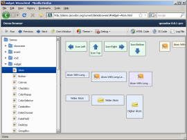

Contains many examples and tests for widgets, layouts and other framework functionality.
Source | Build (needs generation) Explore qooxdoo programming interactively: edit qooxdoo code in one pane, and see the result running in another.
Source | Build (needs generation)A typical rich internet application (RIA) for displaying RSS feeds.
Source | Build (needs generation)A low-level, DOM-oriented application without any high-level qooxdoo widgets.
Source | Build (needs generation)Searchable API reference of the qooxdoo framework.
Framework APIIntegrated unit testing framework similar to (but not requiring) JSUnit.
Framework Tests (needs generation)